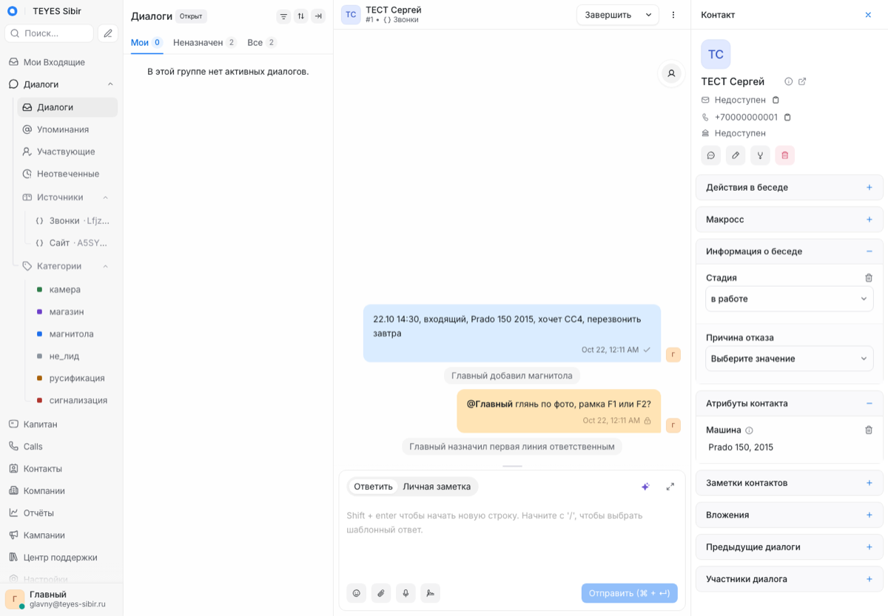
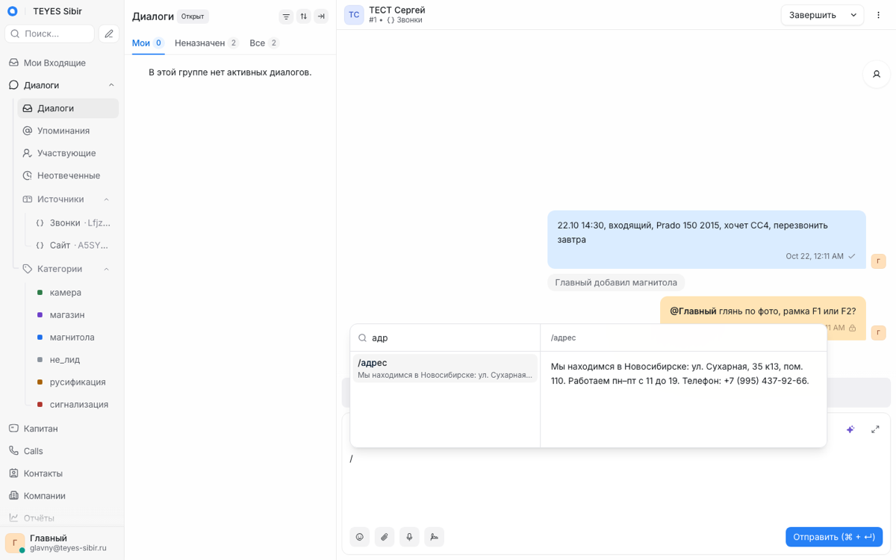

CRM первой линии TEYES Sibir
Делаем по шагам. Сначала все сообщения приходят в одно окно, и менеджер отвечает оттуда. Затем менеджер сам ведёт каждый лид: имя, телефон, машина, когда писал или звонил. Автоматику добавляем только после того, как эти два шага работают.
Решения владельца 21.10.2026
| Вопрос | Решение | Что это меняет |
|---|---|---|
| Как работаем с ТЗ | ТЗ ведём и сохраняем, чтобы показать программистам; работы идут по нему этапами. Замечания владелец даст, когда будет готово визуально | Эта страница – рабочее ТЗ. Каждый этап заканчивается проверкой, коммитом и отметкой здесь |
| Номер WhatsApp | Основной номер компании | Риск блокировки основного номера принят. Шлюз подключается к номеру как ещё одно связанное устройство, телефон продолжает работать как раньше. Правила: только ответы клиентам, никаких рассылок и массовых сообщений |
| Сервер | Текущий Beget, тариф пока не поднимаем; владелец увеличит, когда понадобится | Ставим с жёсткими лимитами памяти, чтобы CRM не мешала живым сайтам и магазинам. Признаки, что пора увеличивать, – в разделе «Сервер» |
| Проба на стенде Codex | Да, с тестовыми номерами | На стенде свободно около 250 МБ памяти (проверено 21.10), новые программы туда не ставим. Пробуем только то, что уже есть в Chatwoot: поля, метки, канал «Звонки», отчёты, Telegram-бот. Шлюз WhatsApp пробуем сразу на Beget |
| Telegram | Рабочий аккаунт – @teyesnsk | К нему подключается бизнес-бот, переписка идёт в CRM |
| Max | Проверку ИП владелец проходит сам | Мост Max делаем, бот подключаем после модерации |
| Кто отвечает | Сейчас один человек. Потом первая линия, вторая линия и главный, которому идут оповещения и который контролирует | Две команды и роль главного заводим в этапе 1а, см. «Линии и главный» |
| Подключаем | Канал Instagram в Chatwoot через приложение Meta. Нужен профессиональный аккаунт Instagram и кабинет разработчика Meta, шаги – в этапе 4 |
Ход работ
| Этап | Статус | Что проверено |
|---|---|---|
| 1а. Chatwoot на Beget | сделан 21.10 | Chatwoot 4.19.0 на crm.45.12.72.227.sslip.io; все 37 адресов сервера отвечают как до установки; CRM занимает ~900 МБ, доступно ещё 1,47 ГБ; снаружи закрыты регистрация, чтение и запись без пароля, база и Redis |
| 0. Проба | 10 из 12, 22.10 | Работают: поля и стадии, метки и фильтр, быстрые ответы через «/», заметка с @упоминанием, команды линий, рабочие часы с автоответом (проверено ночью), канал «Звонки», объединение контактов, отчёты и CSV. Telegram и «один разговор на клиента» проверим на живом канале в этапе 1б |
| 1б. Сайт | приём готов 22.10 | «Мосты CRM» на Beget: заявка сохраняется, отвечает Тильде «ok», за секунды появляется в канале «Сайт» со стадией «новый», машиной, страницей и метками рекламы; повторная заявка ложится в карточку того же клиента; без ключа – отказ. 9 тестов + проверка снаружи. Осталось: владелец подключает вебхук в настройках форм Тильды. Вход для форм будущего сайта на коде уже есть |
| 1б. Telegram | следующий | Нужно от владельца: бот у @BotFather с бизнес-режимом. Подключаем к @teyesnsk сначала только для личного аккаунта владельца, потом – все чаты |


Находки пробы: в Chatwoot 4.19 уже есть раздел «Неотвеченные» – готовая замена счётчику Wazzup; поля по умолчанию свёрнуты в правой панели, менеджеру нужно один раз раскрыть «Информация о беседе» и «Атрибуты контакта».
Этапы работ
Каждый этап – законченный рабочий результат, проверка и коммит; в одном этапе не больше трёх файлов своего кода. Следующий начинаем, когда принят предыдущий. Сроки – рабочее время без ожидания модерации Max и проверки Meta.
В первый же день, параллельно этапу 0, владелец запускает две внешние проверки: профиль ИП в Max для бота (модерация до 48 часов) и кабинет разработчика Meta для Instagram. Иначе этапы 3 и 4 будут ждать.
Этап 0. Проба на стенде Codex · 1 день
Отдельный тестовый аккаунт внутри Chatwoot стенда, Сириус не трогаем. Проверяем 12 пунктов: 1) поля клиента и поле-список «Стадия»; 2) метки и фильтр по ним; 3) быстрые ответы через «/»; 4) приватная заметка и @упоминание; 5) две команды-линии и назначение; 6) рабочие часы и автоответ; 7) сортировка «Ждут ответа»; 8) канал «Звонки»: менеджер сам создаёт разговор; 9) настройка «один разговор на клиента» выключена – после закрытия новый разговор; 10) объединение двух контактов; 11) отчёты по каналам и меткам, выгрузка CSV; 12) Telegram-бот в бизнес-режиме на тестовом аккаунте.
Готово, когда: по каждому из 12 пунктов отметка «работает / не работает» со снимком экрана. Пункты 1–11 обязательны для этапа 1. Стенд на версии 4.14.2, боевая будет 4.19 – отличия отмечаем.
Этап 1а. Chatwoot на Beget · 2 дня
Chatwoot, его база и Redis в отдельных контейнерах с лимитами памяти (бюджет ниже, в разделе «Сервер»); поддомен crm.teyes-sibir.ru через существующий Caddy с сохранённой копией настроек для отката; ночная копия базы; сообщение главному при нехватке памяти или диска. Сразу настраиваем поля, стадии, метки, быстрые ответы, рабочие часы, две команды и роль главного.
Готово, когда: окно открывается по адресу; все сайты и магазины на сервере отвечают как до установки (проверка каждого адреса); после запуска доступно не меньше 300 МБ памяти и свободно не меньше 2 ГБ диска; копия базы разворачивается в пустую базу и в ней видны тестовые разговоры.
Этап 1б. Сайт и Telegram · 1–2 дня
Сервис «Мосты CRM»: приём вебхука Тильды (формат Тильды, ключ, ответ за 5 секунд, заявка сохраняется до отправки в Chatwoot). Telegram @teyesnsk через бизнес-бота. Старая отправка заявок в Telegram и на почту остаётся.
Готово, когда: тестовая заявка с формы «Запись на установку» приходит в окно с телефоном, страницей и метками рекламы; при выключенном Chatwoot заявка не теряется и уходит позже; сообщение в @teyesnsk приходит в окно, ответ доходит.
Этап 2. WhatsApp · 1–2 дня
Шлюз WAHA на Beget, сначала тестовый номер, потом основной.
Готово, когда: текст, фото и голосовое приходят в окно; ответ с фото доходит; первое сообщение клиенту из окна доходит; основной телефон 24 часа принимает и отправляет как обычно, связанное устройство не отваливается.
Пилотная неделя · 7 дней, параллельно этапам 3–4
С этого дня менеджер отвечает в сайте, Telegram и WhatsApp только из окна.
Готово, когда: за неделю ни одно сообщение не потерялось – сверка окна с телефоном WhatsApp и @teyesnsk на 20 случайных разговорах. Это приёмка шага 1.
Этап 3. ВКонтакте и Max · 2–3 дня
Готовый мост ВК после проверки на тестовом сообществе; мост Max в «Мостах CRM» после модерации бота.
Готово, когда: текст и фото из ВК и Max приходят в окно и ответ доходит; запрос с неверной подписью ВК отклоняется.
Этап 4. Instagram · 1 день после проверки Meta
Приложение Meta, вход через Instagram, канал в Chatwoot.
Готово, когда: сообщения в Direct приходят в окно и ответ доходит; ограничение по времени ответа (если есть) записано в регламент.
Этап 5. Учёт лидов · 2 дня
Канал «Звонки», отчёт первичных и повторных лидов, утренний список незаполненных и оповещения главному о разговорах без ответа дольше 10 минут.
Готово, когда: утренний список в 9:00 приходит главному и содержит заранее подготовленный незаполненный тестовый лид; оповещение приходит на тестовый разговор без ответа; неделю число лидов по отчёту расходится с ручным подсчётом не больше чем на 1–2; у 9 из 10 лидов есть телефон, машина и стадия.
Что изменилось против версии 1
- Два шага задачи: «одно окно» и «учёт лидов». Этапы работ ниже – это как мы их делаем. Всё остальное перенесено в раздел «Потом».
- Бенчмарки стали конкретными: 20 приёмов из справок amoCRM, Битрикс24, Wazzup, Umnico, Chat2Desk, respond.io, Front, АвтоДилера, у каждого ссылка и отметка, есть ли это в бесплатном Chatwoot.
- Выводы Codex и агентов проверены – 17 утверждений, у каждого способ проверки и итог. Пять оказались неверными, в том числе три моих.
- Исправлены ошибки версии 1: обязательные поля перед закрытием разговора в бесплатном Chatwoot недоступны; зарубежный сервер для WhatsApp и Telegram может не понадобиться; Evolution API больше не запасной вариант; первым написать клиенту в Telegram из Chatwoot нельзя.
- Меньше своего кода: для ВКонтакте нашёлся готовый мост с открытой лицензией, для WhatsApp связка с Chatwoot встроена в шлюз.
Шаг 1. Все сообщения в одно окно
Цель: менеджер не бегает по телефонам, аккаунтам и чатам. Открыл одно окно на компьютере или в приложении на телефоне, видит всех, кто ждёт ответа, и отвечает оттуда же. Клиент получает ответ в том мессенджере, в который писал.
Окно – Chatwoot: бесплатная программа с открытым кодом, ставится на наш сервер. Последняя версия 4.19.0 вышла 20.10.2026, интерфейс на русском, есть приложение для телефона. У Codex он уже стоит на тестовом сервере и отвечает (версия 4.14.2).
Как выглядит работа менеджера
Схема, не снимок экрана. Всё, что на ней есть, в бесплатном Chatwoot работает из коробки: сортировка «Ждут ответа», приватные заметки и упоминание коллеги, быстрые ответы через «/», свои поля клиента, метки.
- Список «Ждут ответа». Как счётчик «неотвеченных» в Wazzup: сверху те, кому мы ещё не ответили, а не те, кого не прочитали. Ответили или закрыли – разговор ушёл вниз.
- «Отвечать не нужно». Клиент написал «спасибо» – менеджер закрывает разговор кнопкой «Решить», и тот пропадает из очереди. Новое сообщение клиента вернёт его в очередь.
- «Неразобранное». Как в amoCRM и АвтоДилере: вкладка «Не назначены», где лежат новые разговоры, пока менеджер не взял их себе. Можно включить автоназначение по кругу.
- Метки шага 1 (не больше шести): магнитола · сигнализация · камера · русификация · магазин · не лид. Метка «не лид» убирает спам и «не по делу» из подсчёта, как группа «Не обращение» в Umnico.
- Быстрые ответы: адрес и график, как проехать, «пришлите фото панели», цены «от» по услугам, запись на установку. Набираются через «/».
- Рабочие часы и автоответ вне пн–пт 11–19: «Ответим завтра с 11:00» – есть в бесплатной версии.
Каналы: чем подключаем и что проверено
| Канал | Чем подключаем | Что проверено | Что не так |
|---|---|---|---|
| Сайт | Вебхук формы Тильды → наш небольшой сервис «Мосты CRM» на том же сервере → Chatwoot, канал «Сайт». Вебхук в настройках Тильды включаем только после вашего «да» | справка Тильды ответ за 5 с, две повторные попытки через минуту, номер заявки, метки рекламы (UTM) в куках | Старую отправку заявок в Telegram и на почту не выключаем: она страхует, если Chatwoot упадёт |
| Шлюз WAHA, лёгкий движок GOWS, встроенная связка с Chatwoot. Основной номер (решение владельца) | релиз WAHA с 2026.6.1 все бывшие платные функции бесплатны; последняя версия 2026.9.2 от 02.10.2026. наш сервер web.whatsapp.com открывается из РФ | Неофициально: номер могут заблокировать. Владелец риск принял; снижаем его – только ответы, без рассылок. Не проверено на стенде: фото из Chatwoot в WhatsApp и первое сообщение клиенту. Запасные шлюзы: GOWA (MIT, своя связка с Chatwoot), форк Chatwoot от fazer-ai | |
| Telegram | Бизнес-режим Telegram: бот подключается к рабочему аккаунту компании, переписка «в личку» идёт в Chatwoot | документация Telegram Premium не нужен, к аккаунту подключается один бот. наш сервер api.telegram.org открывается из РФ | По документации Chatwoot ответить можно в течение 24 часов после последнего сообщения клиента; первым из Chatwoot клиенту не написать (проверено по коду). Аккаунт – @teyesnsk (решение владельца) |
| ВКонтакте | Готовый мост сообщества pavlikru/chatwoot-vk-gateway | GitHub лицензия MIT, обновлён 22.09.2026, умеет вложения и подпись запросов | 0 звёзд и 4 коммита: берём как основу и проверяем на тестовом сообществе, а не пишем с нуля |
| Max | Официальный бот компании → свой мост на официальном клиенте Max (MIT) | dev.max.ru бот только для ИП, юрлица или самозанятого из РФ, после проверки профиля и модерации | Готовые мосты на GitHub без лицензии – только как образец. Личную переписку менеджера в Max забрать нельзя: клиентов ведём в бота компании |
| Канал Instagram в Chatwoot через приложение Meta | поиск способов без приложения Meta не найдено | подключаем решение владельца. Нужны профессиональный аккаунт и приложение Meta; данные переписки проходят через серверы Meta | |
| Звонки | В шаге 1 не подключаются. Менеджер вносит их руками в шаге 2 | – | Автоматика звонков – в разделе «Потом» |
flowchart TD
subgraph K["Клиенты пишут"]
direction LR
WA["WhatsApp"]
TG["Telegram"]
MX["Max"]
VK["ВКонтакте"]
SITE["Формы сайта"]
end
WAHA["Шлюз WAHA"]
MAXB["Мост Max"]
VKB["Мост ВК"]
ADM["Мосты CRM
приём заявок"]
CW[("Chatwoot
одно окно")]
OPS["Менеджеры
компьютер и телефон"]
BACK["Старый путь:
Telegram и почта"]
WA --> WAHA --> CW
TG -- "бизнес-бот" --> CW
MX --> MAXB --> CW
VK --> VKB --> CW
SITE -- "вебхук Тильды" --> ADM --> CW
SITE -.-> BACK
CW <--> OPS
Всё стоит на сервере в РФ. Если на стенде окажется, что WhatsApp или Telegram из РФ работают нестабильно, добавим проход через зарубежный сервер, который ничего не хранит.
Сервер
Решение владельца: ставим на текущий сервер Beget в РФ, тариф пока не поднимаем. Проверено 21.10: 2 ядра, 3,9 ГБ памяти, доступно около 2 ГБ, подкачка занята на 1,5 из 2 ГБ, свободно 5,4 ГБ диска. На сервере уже 30 контейнеров и 9 служб: магазины, сайты, Case Studio, SEO-сервисы. Chatwoot по документации просит 4 ГБ, поэтому ставим впритык и осторожно:
- Жёсткие лимиты памяти на каждый контейнер CRM, всего не больше 1,6 ГБ: окно Chatwoot 550 МБ (один рабочий процесс), фоновые задачи Chatwoot 450 МБ, база 200 МБ, Redis 64 МБ, шлюз WhatsApp 250 МБ (с этапа 2), «Мосты CRM» 100 МБ. Если памяти не хватит, остановится CRM, а не сайты и магазины. Это меньше, чем просит документация, поэтому после этапа 1а смотрим реальный расход.
- Адрес crm.teyes-sibir.ru подключаем в уже работающий на сервере Caddy, который обслуживает остальные домены. Перед правкой сохраняем его настройки, проверяем все домены после перезагрузки, при сбое возвращаем копию.
- Диск: программы CRM займут около 2–3 ГБ. На сервере лежит 2,4 ГБ неиспользуемого кэша сборок Docker – его чистка освободит место (спрошу перед чисткой).
- Пора увеличивать тариф, если неделю доступной памяти меньше 300 МБ, свободного диска меньше 2 ГБ или окно отвечает дольше 3 секунд. Об этом придёт сообщение главному.
Данные клиентов остаются в РФ: этого требует закон о персональных данных с 01.07.2025.
Копии базы: каждую ночь на сервере (хранятся три последние) и зашифрованная копия на ваш Mac. Второго сервера пока нет – добавим, когда будете увеличивать тариф. До запуска один раз проверяем, что из копии всё восстанавливается.
Когда шаг 1 сделан
- Тестовое сообщение из каждого подключённого канала приходит в Chatwoot за минуту, ответ доходит клиенту.
- Неделю менеджеры отвечают только из Chatwoot, в телефоны и аккаунты не заходят.
- Ни одно сообщение за неделю не потерялось: сверка с телефоном WhatsApp и аккаунтами.
Перед запуском проверяем функции Chatwoot на стенде Codex (этап 0), шлюз WhatsApp – сначала на тестовом номере.
Шаг 2. Учёт лидов руками
Цель: в любой момент видеть, сколько у нас лидов, откуда они пришли и что с каждым. Менеджер сам вытаскивает из разговора имя, телефон и машину, сам вносит звонки и ведёт лид до записи. Ничего не автоматизируем, пока руками не заработает: так станет понятно, какие поля реально нужны.
Что считаем лидом
Готового правила нет ни в одной справке, поэтому задаём своё по образцу Битрикс24 и Chat2Desk:
- Клиент – человек. Один на все каналы, связываем по телефону.
- Лид – обращение с новой потребностью: новый разговор или звонок. Пишет впервые – первичный. Уже есть в базе – повторный (как в статистике открытых линий Битрикс24).
- Разговор закрыли, а клиент через неделю спросил про другую услугу – новый лид. Дописал по той же машине и услуге – тот же лид.
- В Chatwoot это одна настройка канала, «один разговор на клиента» (проверено по коду): выключаем её, и сообщение после закрытия открывает новый разговор, который сам попадает в отчёт новым лидом. Если клиент просто дописал по старому вопросу, менеджер объединяет его с прошлым лидом заметкой.
- Спам, «не по делу», поставщики – метка «не лид», в подсчёт не идут.
Карточка клиента и поля лида
| Где | Поле | Кто ставит | Значения |
|---|---|---|---|
| Клиент | Имя | Менеджер | Как представился |
| Телефон | Менеджер, если клиент пришёл не из WhatsApp | Формат +7…, как в контроле дублей amoCRM. Без телефона не связать каналы и звонки | |
| Машина | Менеджер | Марка, модель, год: «Prado 150, 2015» | |
| Пришёл из | Сам | Канал первого сообщения | |
| Лид | Стадия | Менеджер | новый · в работе · записан · приехал · думает · отказ |
| Причина отказа | Менеджер, если отказ | дорого · не подходит к машине · сроки · пропал · другое | |
| Услуга | Менеджер меткой | Метки из шага 1 |
Всё это – свои поля и метки Chatwoot, есть в бесплатной версии. Стадия – поле-список, по нему строятся сохранённые фильтры: «все записанные на эту неделю», «думают больше трёх дней». Поля видны в правой колонке разговора, как на схеме выше.
Чего в бесплатном Chatwoot нет. Запретить закрыть разговор без заполненных полей можно только в платной версии (так написано в справке Chatwoot). Вместо запрета – фильтр «закрыты без машины или телефона» и короткий список таких разговоров каждое утро старшему.
Как менеджер вносит звонок
Отдельный канал «Звонки» внутри Chatwoot. Это пустой API-канал: в него ничего не приходит, а менеджер после разговора сам создаёт в нём разговор у клиента. По коду Chatwoot новый разговор в таком канале менеджер начать может. Тогда звонок попадает в те же отчёты, что и сообщения, и считается лидом.
- Поговорил по телефону → нашёл клиента по номеру или создал нового.
- «Новый разговор» → канал «Звонки» → одна строка: «21.10 14:30, входящий, Prado 150, хочет CC4, перезвонить завтра».
- Поставил метку услуги и стадию.
Если клиент уже есть и это продолжение старого разговора – не новый разговор, а заметка в карточке клиента. В справке Chatwoot заметки так и описаны: «записать звонок, письмо или встречу».
Позже станет проще: «умная запись» Т-Мобайла (49 ₽ в месяц) умеет пересылать запись разговора в мессенджер. Менеджер будет пересылать её в бота CRM, и запись сама прикрепится к клиенту.
Сколько у нас лидов
- Отчёт Chatwoot по каналам – новые разговоры по дням и неделям из каждого канала, включая «Звонки». Есть в бесплатной версии, выгружается в CSV.
- Отчёт по меткам – сколько лидов по каждой услуге; «не лид» не считается.
- Время первого ответа – там же, по каждому менеджеру.
- Первичные и повторные отдельно Chatwoot не считает. Это первая маленькая доработка: раз в неделю выборка по базе.
flowchart LR A["Новое сообщение
или звонок"] --> B{"Клиент уже есть?
ищем по телефону"} B -- "нет" --> C["Новый клиент
первичный лид"] B -- "да" --> D["Объединить контакты
повторный лид"] C --> E["Имя, телефон, машина"] D --> E E --> F["Стадия: в работе"] F --> G{"Чем кончилось"} G -- "записан" --> H["Стадия «записан»
запись в АвтоДилере"] G -- "думает" --> I["Стадия «думает»
вернуться через 2 дня"] G -- "отказ" --> J["Причина отказа"]
Объединение контактов в Chatwoot необратимо (по документации API), поэтому объединяем только при совпадении телефона.
Линии и главный
Сейчас отвечает один человек, но структуру заводим сразу, чтобы потом не переделывать:
| Роль | Как в Chatwoot | Что делает |
|---|---|---|
| Первая линия | Команда «Первая линия», все новые разговоры приходят сюда | Отвечает, берёт имя, телефон, машину, ставит стадию, записывает |
| Вторая линия | Команда «Вторая линия»: мастер, подбор, сложные вопросы | Получает разговор, когда первая линия передала его в команду или упомянула через @ |
| Главный | Администратор | Видит всё; получает оповещения и утренний список незаполненных; смотрит отчёты |
Команды есть в бесплатном Chatwoot, свои роли с тонкими правами – только в платном (проверено по коду). Оповещения главному о разговорах без ответа дольше 10 минут – наша небольшая доработка: в Chatwoot это платная функция.
Когда шаг 2 сделан
- За неделю число лидов по каналам из отчёта Chatwoot сходится с ручным подсчётом старшего.
- У 9 из 10 лидов заполнены телефон, машина и стадия.
- Каждый звонок, о котором знает менеджер, есть в канале «Звонки».
Бенчмарки: что берём и у кого
Каждый приём найден в справке продукта (ссылки в источниках). Последняя колонка – можно ли это сделать в бесплатном Chatwoot.
| № | Приём | У кого | Шаг | В Chatwoot |
|---|---|---|---|---|
| 1 | Счётчик «неотвеченных», а не «непрочитанных»; кнопка «отвечать не нужно» | Wazzup | 1 | есть сортировка «Ждут ответа», закрытие кнопкой «Решить» |
| 2 | Очередь «Неразобранное»: принять, спам или привязать к старому клиенту | amoCRM, Kommo, АвтоДилер | 1–2 | частично вкладка «Не назначены» есть, кнопки «привязать к старому» нет |
| 3 | Скрытые заметки в чате и @упоминание коллеги | Битрикс24, Trengo, respond.io | 1 | есть |
| 4 | Быстрые ответы через «/» | respond.io, Trengo, Wazzup | 1 | есть |
| 5 | Метки с фильтром | Umnico, Trengo | 1 | есть |
| 6 | Распределение по кругу; если не ответил за N минут – следующему | Битрикс24 | 1 | частично по кругу есть, передача по таймеру только в платной |
| 7 | Рабочие часы и автоответ, время ответа в рабочих часах | Front, Trengo, Missive | 1 | есть |
| 8 | Тревога «не взяли за X минут» | Missive | 1 | доработка в Chatwoot это платная функция SLA |
| 9 | Приложение на телефон с уведомлениями | amoCRM, Wazzup, respond.io | 1 | проверить приложение есть, уведомления со своего сервера проверить на стенде |
| 10 | Источник лида ставится сам | amoCRM, Битрикс24 | 2 | есть канал = инбокс |
| 11 | Первичное и повторное обращение в отчёте | Битрикс24 | 2 | доработка своя выборка по базе |
| 12 | Метка «Не обращение», спам вне подсчёта | Umnico, Битрикс24 | 2 | настройка метка «не лид» |
| 13 | Стадии лида, включая проигранные с причиной | respond.io, АвтоДилер | 2 | настройка поле-список «Стадия» |
| 14 | Отдельно метки клиента (навсегда) и обращения (на один раз) | Chat2Desk | 2 | настройка поля клиента + метки разговора |
| 15 | Склейка клиента по телефону в формате +7 | amoCRM, Kommo, Битрикс24 | 2 | руками объединение есть, необратимое, автосклейки нет |
| 16 | Звонок в ленте клиента с итогом разговора | Kommo | 2 | настройка канал «Звонки» или заметка |
| 17 | Обязательные поля / нельзя закрыть без метки | Битрикс24, Kommo, Chat2Desk | 2 | платно заменяем утренним списком незаполненных |
| 18 | Обращения по каналам и дням, время первого ответа | Битрикс24, respond.io, Umnico | 2 | есть отчёты + CSV |
| 19 | Канбан лидов по стадиям | АвтоДилер, amoCRM | 2 | дополнение в Chatwoot нет; есть бесплатное CrisAlva1414/Chatwoot-Kanban (MIT, маленькое) – сначала фильтры, доска по запросу |
| 20 | Фильтр по каналу и поиск по машине, телефону, фамилии | АвтоДилер (с 25.08.2026) | 2 | есть фильтры и поиск по полям |
Чем ещё полезен рынок
- Скорость решает. Car Wars, первое полугодие 2026: автодилеры перезвонили только по 46% пропущенных, 66% не дозвонившихся больше не звонят. Поэтому в шаге 1 главный экран – «Ждут ответа».
- Предлагать запись. CallRevu, 148,7 тыс. звонков: 60% менеджеров не предлагали записаться, а когда предлагали, записей было 44% вместо 27%. В быстрых ответах – готовая фраза с ближайшим свободным временем.
- Сам АвтоДилер растёт в CRM: канбан «Неразобранное», фильтр по каналу с 25.08.2026, в справке есть встроенные Max, ВК, Telegram и WhatsApp. Стоит узнать у них цену модуля: если входит в ваш тариф, это соперник Chatwoot без двойного ввода.
Готовые программы целиком, которые смотрели
| Программа | Что это | Решение |
|---|---|---|
| Chatwoot 4.19 | Окно на все каналы, MIT, русский, приложение | берём |
| Форк fazer-ai | Chatwoot со встроенным WhatsApp по QR, обновляется в день выхода основной версии | запасной если связка WAHA окажется нестабильной; канбан у них платный |
| Ticketz, Press-Ticket, Whaticket | Тикеты вокруг WhatsApp | нет у Ticketz нет русского и Telegram, у Press-Ticket остальные каналы через платный сервис |
| Evo CRM, Evolution API | CRM и шлюз WhatsApp | нет CRM ещё не вышла из тестовой версии; шлюз с 2.4 требует активации на их сервере лицензий |
| amoCRM, Битрикс24, Wazzup, Umnico | Лучший готовый интерфейс | платно копируем приёмы из таблицы выше |
Проверка выводов Codex и агентов
Всё проверено 21.10.2026. «Сам» – проверено мной по первоисточнику, а не со слов агента.
| № | Утверждение | Откуда | Как проверил | Итог |
|---|---|---|---|---|
| 1 | Окно операторов – Chatwoot, свою CRM с нуля не писать | Codex, 10.09 | Сам: релиз 4.19.0 от 20.10.2026 на GitHub; функции по коду и справке | верно |
| 2 | Стенд Chatwoot работает | Codex | Сам: запрос к стенду – версия 4.14.2, очереди и база в порядке | верно но отстаёт на 5 версий, стоит за рубежом и почти без памяти (сам: 250 МБ доступно 21.10) – только для пробы функций |
| 3 | Для ВК зрелого шлюза нет | Codex | Сам: GitHub – 0 звёзд, но MIT и обновлён 22.09.2026 | верно всё равно берём как основу, своё не пишем |
| 4 | Для Max нужен свой мост | Codex | Сам: официальный клиент Max (MIT, 138 звёзд, 08.10.2026); готовые мосты без лицензии | верно |
| 5 | Каналы: сайт, Telegram, Instagram, ВК, Max | Codex | Сам: в их архитектуре нет WhatsApp, звонков и форм Тильды | пробел пропущены каналы, где больше всего обращений: по Метрике за лето 343 формы и 116 кликов по телефону |
| 6 | Порядок работ: сначала бот, CRM потом | Codex, шаги 81–82 из 108 | Сам: в статусе проекта прямо «CRM не начинать» | переставляем ваша задача – сначала окно и учёт |
| 7 | Бизнес-режим Telegram требует Premium | агент | Сам: документация Telegram – «does not require Telegram Premium» | неверно Premium не нужен |
| 8 | WhatsApp и Telegram – только через сервер за рубежом | моя версия 1 | Сам: команды на сервере Beget в РФ – api.telegram.org и web.whatsapp.com отвечают | неверно зарубежный проход – запасной вариант; рабочую сессию проверим на стенде |
| 9 | Закрыть разговор можно только с заполненным итогом | моя версия 1 | Сам: справка Chatwoot – только в платных версиях | неверно заменено утренним списком незаполненных |
| 10 | Evolution API – запасной шлюз WhatsApp | агент, версия 1 | Сам: заметки к релизу 2.4.0 – обязательная активация лицензии | неверно не берём |
| 11 | WAHA целиком бесплатен | агент | Сам: заметки к релизу 2026.6.1 | верно |
| 12 | Менеджер может написать клиенту первым в любом канале | подразумевалось | Сам: код Chatwoot – нельзя в Telegram и Instagram; можно в WhatsApp, API-каналах, SMS, почте | частично для WhatsApp через WAHA проверить на стенде |
| 13 | Т-Банк: API телефонии нет | агент | Сам: поиск по сайту и API Т-Бизнеса – не найдено; «умная запись» Т-Мобайла пересылает запись в мессенджер | верно плюс найден полуавтоматический путь |
| 14 | В Max на ИП до 5 ботов | агент | Сам: на dev.max.ru ограничения нет | не подтверждено для нас неважно, нужен один бот |
| 15 | Chatwoot встанет на текущий сервер Beget | ревьюер версии 1 | Сам: на сервере 2 ядра, 3,9 ГБ, свободно около 2 ГБ, диск 86% | неверно по документации не хватает; владелец решил ставить на текущий с лимитами и увеличить при нехватке |
| 16 | Вебхук Тильды: 5 секунд, два повтора, номер заявки | агент | Сам: справка Тильды | верно |
| 17 | Приём заявок с сайта уже написан в admin.teyes-sibir.ru | моя версия 1–3 | Сам: код leads.py – только свой JSON для форм сайта-копии, в Chatwoot не отправляет | неверно делаем приём вебхука Тильды в «Мостах CRM» |
Что переставил и улучшил
- Порядок как в вашей задаче: окно → учёт → автоматика → бот. Codex прошёл 81 шаг из 108 по боту и не начал CRM.
- Каналы по объёму: сайт и WhatsApp первыми, потому что форм и звонков больше всего; ВК и Max следом – у Max есть внешнее ожидание проверки ИП, его запускаем в первый же день.
- Не пишем то, что уже есть: мост ВК готовый, связка WhatsApp встроена в шлюз. Своего кода – один сервис «Мосты CRM»: приём вебхука Тильды, мост Max, оповещения главному, утренний список незаполненных и отчёт первичных и повторных. Приём заявок в admin.teyes-sibir.ru для этого не годится: он сделан для форм сайта-копии и принимает только свой формат.
- Звонки руками считаются как лиды через канал «Звонки», а не теряются в заметках.
- Проба до запуска: день на стенде Codex проверяем функции Chatwoot; WhatsApp – на тестовом номере на Beget в этапе 2.
- Четыре поля вместо девяти: имя, телефон, машина, стадия. Остальное добавим, когда увидим, что реально спрашивают.
Потом, когда шаги 1 и 2 работают
- Звонки сами: пропущенные и записи без ручного ввода. Варианты: виртуальная АТС МегаФона (около 3,5–4 тыс. ₽ в месяц, единственная полная автоматика), Android-телефон с записью и синхронизацией папки, пересылка записей Т-Мобайла в бота.
- Разбор записей ночью: расшифровка открытой моделью GigaAM на нашем сервере, машина, итог и следующий шаг сами попадают в карточку.
- Связь с деньгами: выгрузка работ из АвтоДилера, поиск клиента по телефону, утренняя сводка «лиды → записи → заезды → выручка по каналам». Сначала проверить, есть ли телефон в выгрузке.
- Бот первой линии: «Сириус» Codex пишет менеджеру черновики, потом квиз в Max, Telegram и на сайте с обязательной передачей человеку. После 4–6 недель живых данных.
Что нужно от владельца по ходу работ
- Сейчас: начать проверку ИП в Max и завести кабинет разработчика Meta – обе проверки идут днями.
- Этап 0: тестовый аккаунт Telegram для пробы бизнес-бота (любой второй номер).
- Этап 1а: запись crm.teyes-sibir.ru в DNS – сделаю сам, если дадите доступ, или пришлю, что вписать.
- Этап 1а: можно почистить неиспользуемый кэш сборок Docker на Beget (2,4 ГБ)?
- Этап 1б: «да» на включение вебхука в настройках форм Тильды; создать бота у @BotFather и подключить его в настройках @teyesnsk – пришлю пошагово.
- Этап 2: тестовый номер WhatsApp, потом QR-код с основного телефона.
- Этап 3: ключ доступа сообщества ВК и бот Max после модерации.
- Этап 4: доступ к профессиональному аккаунту Instagram.
Источники
- Chatwoot: github.com/chatwoot/chatwoot (релиз v4.19.0, код app/services/contacts/contactable_inboxes_service.rb); developers.chatwoot.com/self-hosted/deployment/requirements; developers.chatwoot.com/self-hosted/enterprise-edition; chatwoot.com/hc/user-guide/articles/1769161760-required-conversation-attributes; …/1677498364-understanding-contacts; …/1677502327-how-to-create-and-use-custom-attributes; …/1677694691-reading-conversations-agents-labels-inbox-and-team-reports; …/1740546374-how-does-sorting-work; …/1777421876-business-hours-and-auto_responder; chatwoot.com/docs/product/channels/telegram
- WAHA: github.com/devlikeapro/waha/releases (2026.6.1, 2026.9.2); waha.devlike.pro/docs/apps/chatwoot/; waha.devlike.pro/docs/how-to/engines/
- Evolution API: github.com/evolution-foundation/evolution-api/releases (2.4.0-rc1, 06.05.2026)
- fazer-ai: github.com/fazer-ai/chatwoot; GOWA: github.com/aldinokemal/go-whatsapp-web-multidevice; канбан: github.com/CrisAlva1414/Chatwoot-Kanban
- ВК: github.com/pavlikru/chatwoot-vk-gateway. Max: dev.max.ru/docs, github.com/max-messenger/max-bot-api-client-ts
- Telegram: core.telegram.org/api/bots/connected-business-bots. Тильда: help-ru.tilda.cc/forms/webhook. Т-Мобайл: tbank.ru/mobile-operator/features/call-recording/
- amoCRM: amocrm.ru/support/incoming_leads/connect_unsorted/, …/kontrol-dublej/, …/caller_in_unsorted/; Kommo: support.kommo.com/docs/manage-chat-inbox-in-kommo, developers.kommo.com/docs/call-result
- Битрикс24: helpdesk.bitrix24.ru/open/25004908/, /26228062/, /25904116/, /24730032/
- Wazzup: wazzup24.ru/help/how-to-use/unanswered-counter/; Umnico: umnico.com/ru/help/sales-pipeline/, /analytics-of-company/; Chat2Desk: chat2desk.com/baza-znanij/vozmozhnosti/tegi/kak-sozdavat-tegi
- respond.io: respond.io/help/workspace-settings/workspace-settings-lifecycle, /contacts/merge-suggestions; Missive: missiveapp.com/docs/advanced-features/rules/templates/sla-basic-templates; Front: help.front.com/en/articles/2334
- АвтоДилер: autodealer.ru/online/help/kanban_.htm, autodealer.ru/news/920, autodealer.ru/online/crm
- Car Wars H1 2026 и CallRevu: news.dealershipguy.com
- Наши проверки 21.10.2026: стенд Codex chat.132.243.114.150.sslip.io/api; сервер Beget 45.12.72.227 (доступ к api.telegram.org, web.whatsapp.com, память и диск); статус проекта «Сириус» PROJECT_STATUS.md